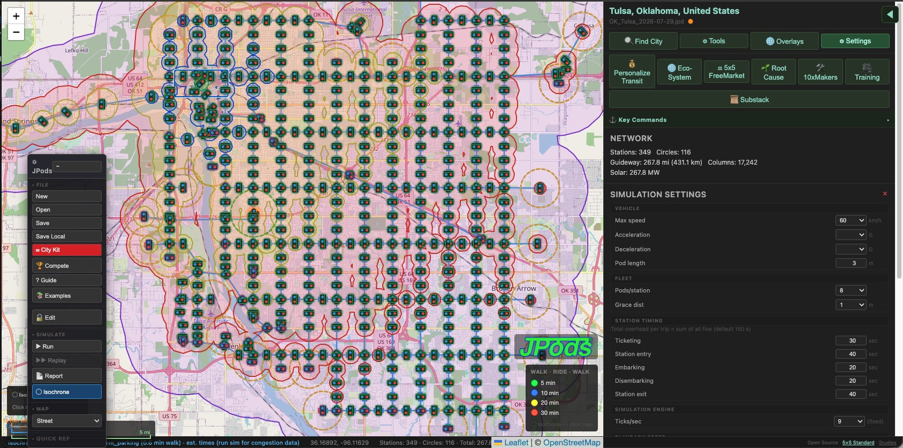
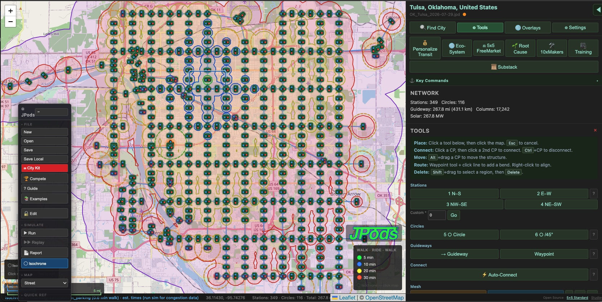
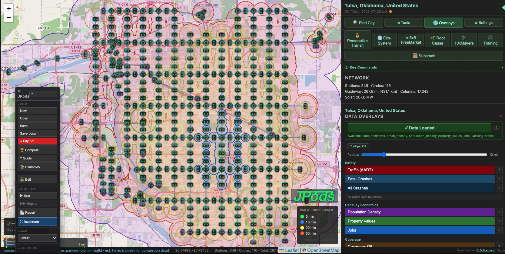
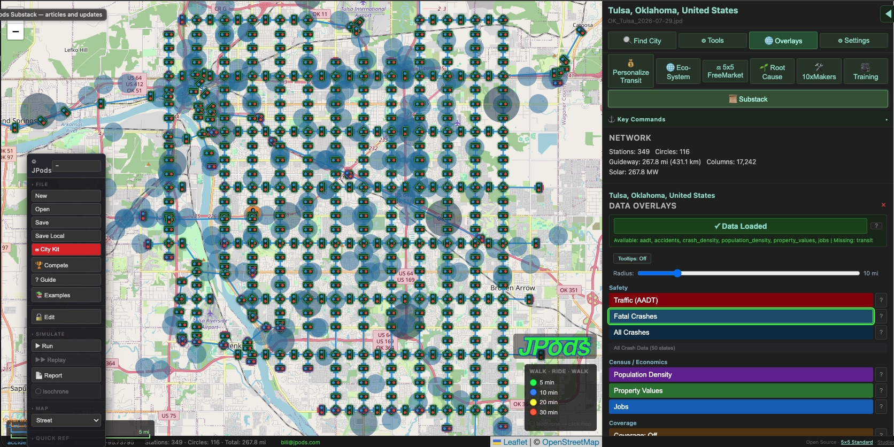
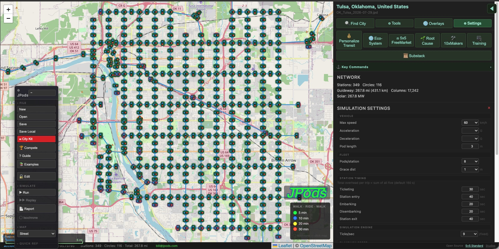
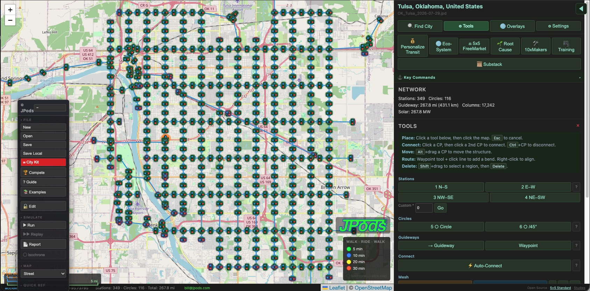

Worked Example: Tulsa, Oklahoma
349 stations, 267.8 miles of guideway. 267.8 MW of solar.
116 circles and 17,242 columns. Each isochrone below is timed door to door from one point. 5 min 10 min 20 min 30 min



MeshMobility is free software that lays a JPods network on a real map of your city, puts real data under it, and shows how far people can travel door to door: walk to a station, ride, walk to the destination.
From a city name to a network you can measure.
One click fits a complete network to the city boundary, aligned to the street grid.
Traffic counts, fatal and all crashes, population, property values and jobs, on the map.
Place stations and circles, connect guideways, route around obstacles with waypoints.
Isochrones show walk–ride–walk time from any point. The simulator runs pods through the network.
349 stations, 267.8 miles of guideway. 267.8 MW of solar.
116 circles and 17,242 columns. Each isochrone below is timed door to door from one point. 5 min 10 min 20 min 30 min



Real data on the map, every assumption in the open, and the tools to change the design.



Free and open to everyone. Start with the numbers, then draw the network.